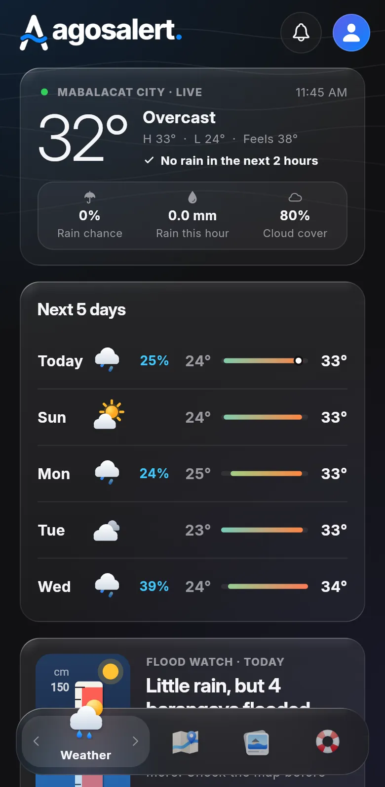
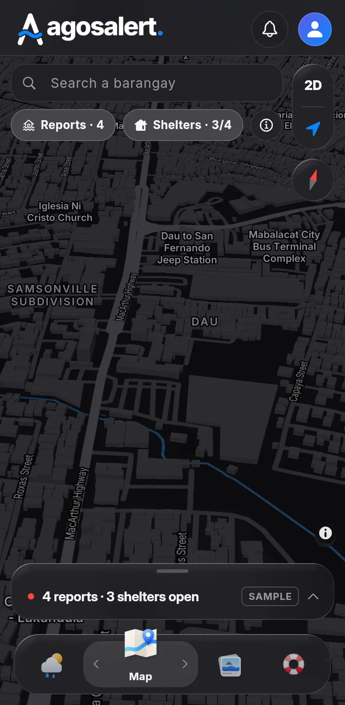
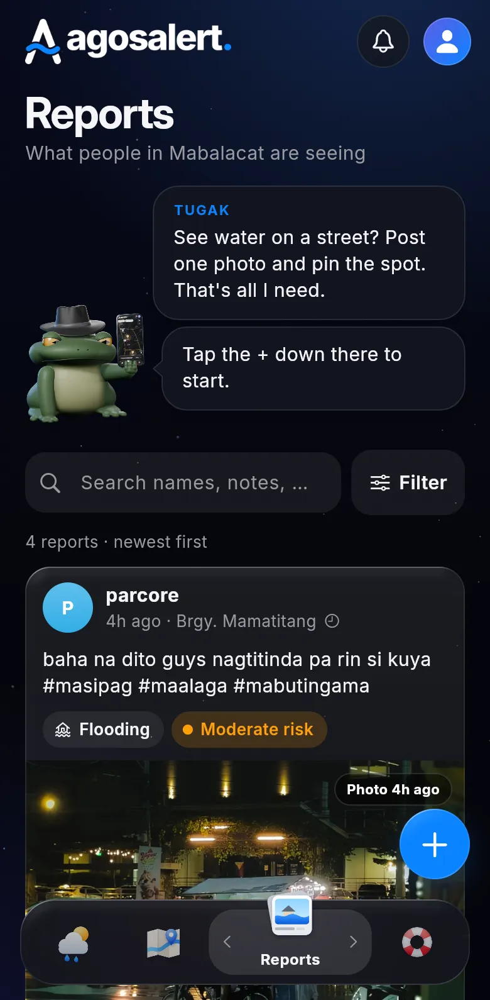
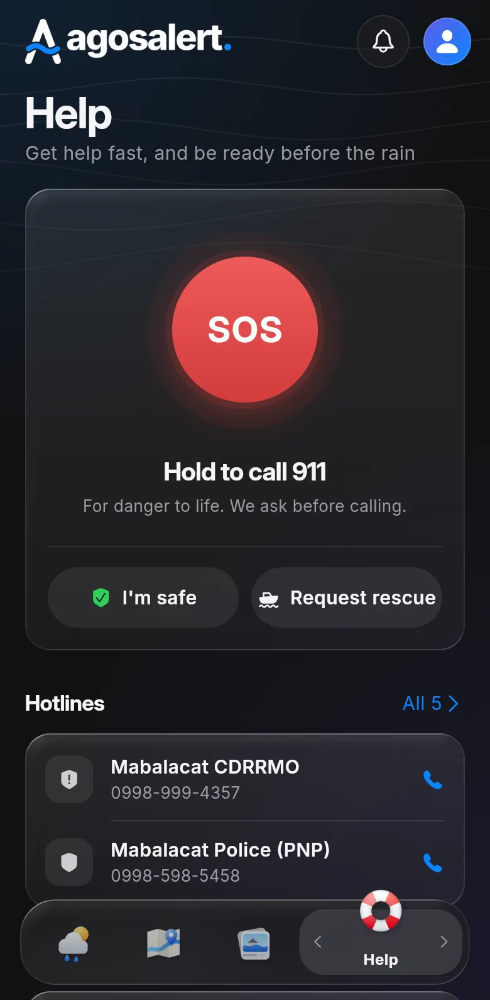
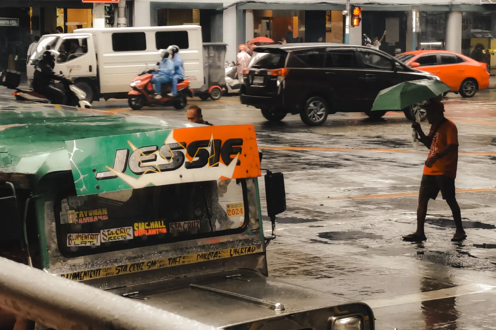
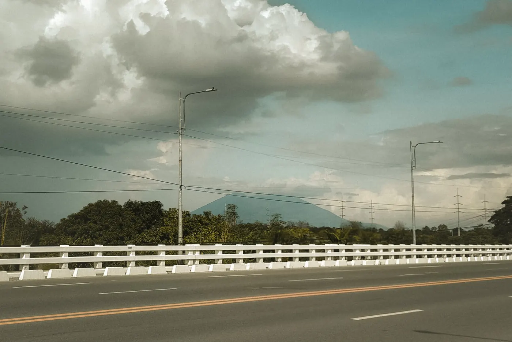
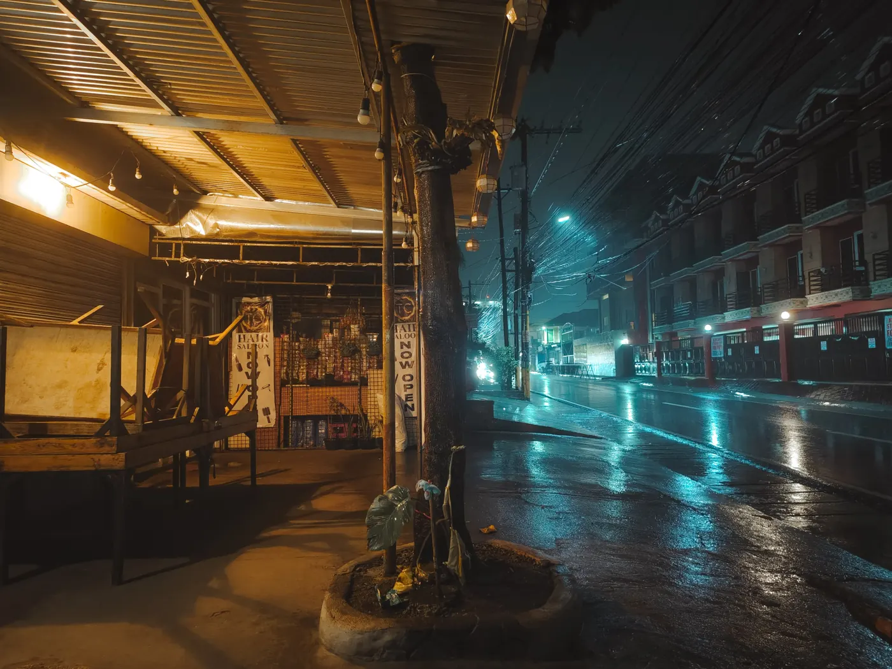
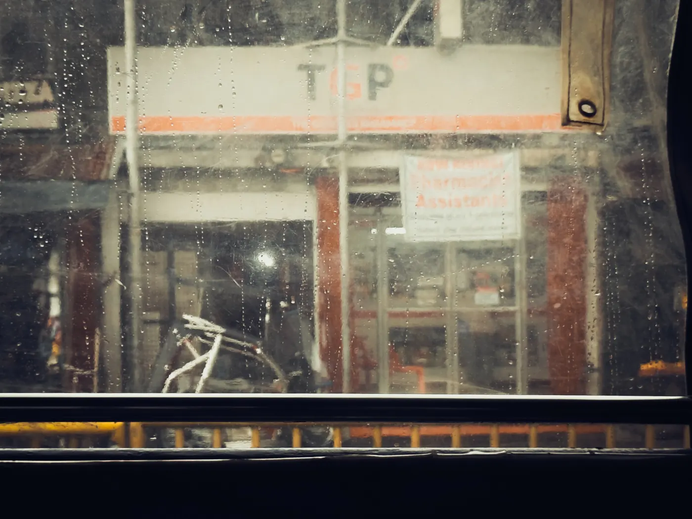
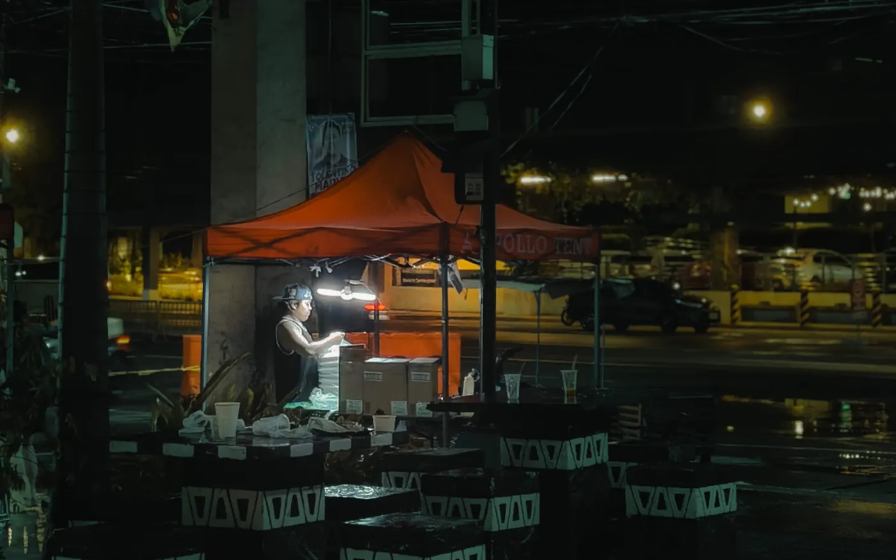
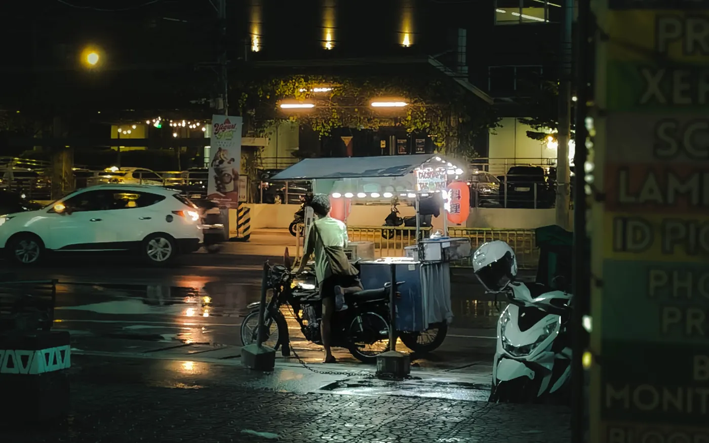

The app
Four tabs. That’s the whole app.
No menus, no maze. Everything you need in a flood sits one tap from the bottom bar.
-

WeatherRight now, and the next 5 days.
-

MapThe whole city, in 3D.
-

ReportsNeighbors post what they see.
-

HelpHold SOS. Call a hotline.
01 Weather
Rain won’t catch you off guard.
Every 15 minutes we pull Mabalacat’s forecast from Open-Meteo and turn it into a flood outlook you can read in a second. Here’s today, live:
Checking the forecast…
TugakI check the sky every 15 minutes. You can stop opening the window.
02 Flood reports
Your neighbors are the sensors.
See water? Pin the spot, snap a photo, say how deep: ankle-high to over the head. It’s on everyone’s map right away.
- ReportedDay 0
- PinnedOn the map
- Voted onAccurate?
- RemovedDay 14
Reports are posted by users and aren’t checked by an official yet.
TugakSee water on the road? Pin it, so the next person doesn’t drive into it. I’d do it myself, but no thumbs.
Mabalacat, on a rainy day
This is what we keep an eye on.






Photos: John Dexter Pimentel
03 Help & hotlines
Save these numbers before you need them.
Hold SOS to call 911. Find the nearest evacuation center. Or put all five hotlines in your phone with one tap, right now.
- National Emergency HotlinePolice, fire, and medical emergencies 911
- Mabalacat CDRRMOCity disaster risk reduction office 0998-999-4357
- Bureau of Fire ProtectionMabalacat fire station 0933-990-9960
- Mabalacat Police (PNP)City police station 0998-598-5458
- Mabalacat City HallLandline (045) 649-8620
Downloads one contacts file (.vcf). Open it on your phone to add all five numbers.
TugakSave all five now. In a flood you won’t have time to search for them.
04 Coverage
All 27 barangays. Yours included.
The forecast and the flood outlook cover the whole city, Sapang Balen in the north to Lakandula in the south. Tap a dot to see its name.
TugakAll 27 barangays, Sapang Balen to Lakandula. Yes, yours too.
05 FAQ
Good questions.
Is AgosAlert official?
No. AgosAlert is a school capstone project made by BSIT students. It isn’t made by, or connected to, the Mabalacat City government. For official warnings, follow PAGASA and the Mabalacat CDRRMO. All of its code is public on GitHub, so anyone can check what it does.
Do I need an account?
Only to report floods and vote on reports. The weather, the map, hotlines and SOS work without one: pick Continue as guest. Accounts are free and only ask for your name, email, and barangay.
Is the data real?
The weather and the flood outlook are live. They come from Open-Meteo and update every 15 minutes. Flood reports are real posts from users, not yet checked by an official. Alerts and evacuation centers are still sample data, marked SAMPLE in the app.
Why isn’t it on Google Play or the App Store?
AgosAlert is a web app for now, so it works in any browser without installing anything. Mobile versions are planned. Until then, you can add it to your home screen: in Chrome on Android, open the menu and tap Add to Home screen. On iPhone, tap Share, then Add to Home Screen.
Who is the toad?
That’s Tugak, Kapampangan for frog. He reads the live weather in the app and tells you what to do first. On a high alert he skips the jokes.
TugakFair questions. I had most of them too, and I live here.
TugakThat’s the tour. Stay dry out there.